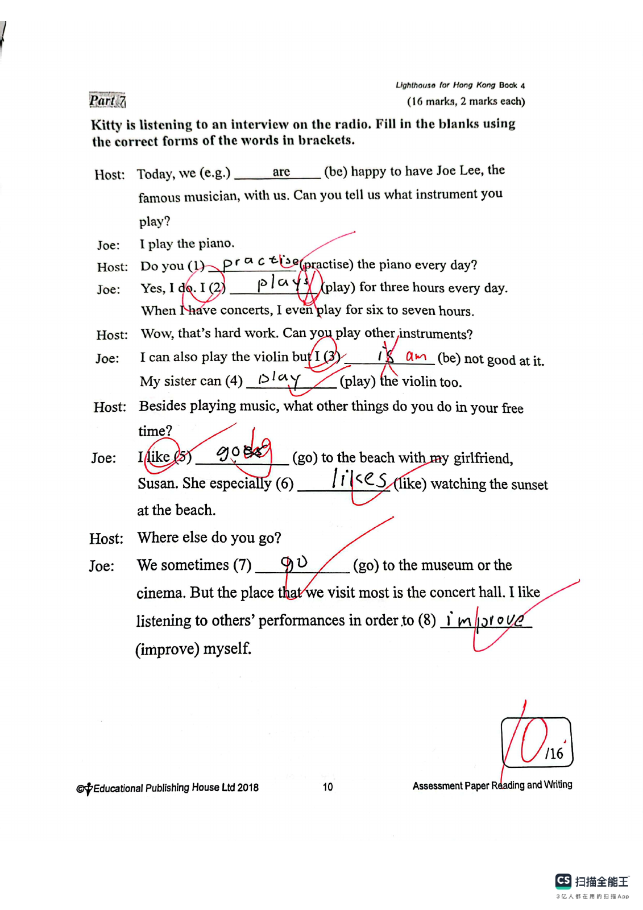
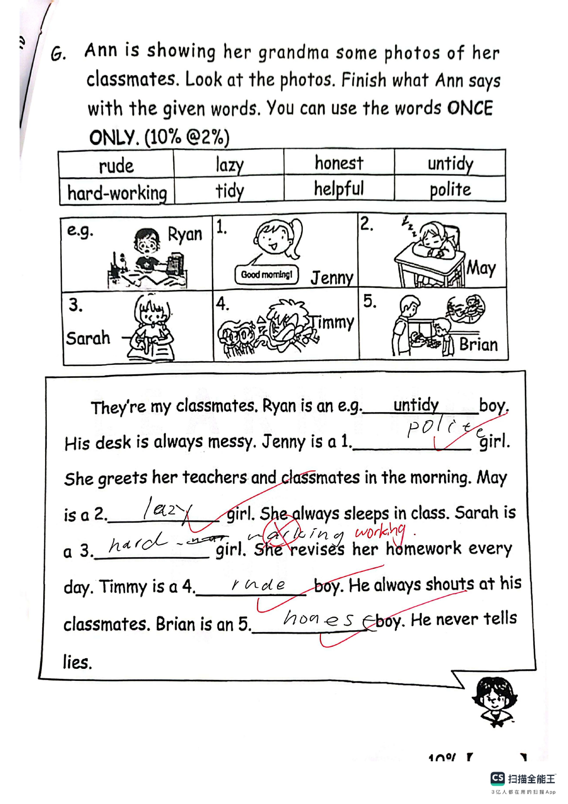
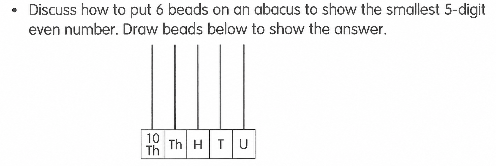

Answer: 384 ÷ 8 ÷ 4 = 12 classrooms (or 384 ÷ (4 × 8) = 12).
已掌握
| # | 单词/词组 | 中文意思 | 例句/说明 | 已掌握 |
|---|---|---|---|---|
| noun 名词 | ||||
| 1 | bank | 银行 | My mum goes to the bank. | |
| 2 | garden | 花园 | We play in the garden. | |
| 3 | robot | 机器人 | The robot can move. | |
| 4 | Thursday | 周四 | We have art on Thursday. | |
| 5 | Saturday | 周六 | I play football on Saturday. | |
| 6 | pupil | 小学生 | The pupil reads a book. | |
| 7 | art | 艺术 | We learn to draw in art class. | |
| 8 | case | 盒子 | Put your pencils in the case. | |
| 9 | supermarket | 超市 | We buy food at the supermarket. | |
| 10 | doctor | 医生 | The doctor checked my temperature. | |
| verb 动词 | ||||
| 11 | have a meal | 吃饭 | We have a meal together every evening. | |
| 12 | pick | 采摘；挑选 | We pick apples from the tree. | |
| 13 | understand | 理解 | I understand the question. | |
| 14 | assist | 协助帮助 | I assist my teacher by handing out books. | |
| 15 | cover | 遮盖 | Please cover the bowl with a lid. | |
| 16 | keep | 保持 | Please keep the classroom clean. | |
| phrase 短语 | ||||
| 17 | dry the clothes | 晾衣服 | We dry the clothes on the washing line. | |
| noun phrase 名词短语 | ||||
| 18 | primary school student | 小学生 | I am a primary school student. | |
| verb/noun 动词/名词 | ||||
| 19 | travel | 旅行 | We travel during the holiday. | |
| conjunction 连词 | ||||
| 20 | because | 因为 | I stay home because it is raining. | |
| # | 单词/词组 | 中文意思 | 例句/说明 | 已掌握 |
|---|---|---|---|---|
| adjective 形容词 | ||||
| 1 | shady | 阴凉的 | We sit under a shady tree. | |
| 2 | corresponding | 相对应的 | Write each answer in the corresponding box. | |
| 3 | excited | 兴奋的；激动的 | I was very excited on the first night. | |
| 4 | careless | 粗心的；不小心的 | A careless mouse ran across the lion's paw. | |
| 5 | rich | 富有的 | Now Billy was rich. | |
| 6 | fascinating | 极有趣的；迷人的 | The plant has a fascinating appearance. | |
| noun 名词 | ||||
| 7 | home | 家 | We stayed at home in the afternoon. | |
| 8 | cabbage | 白菜；卷心菜 | The bunny likes cabbage. | |
| 9 | hamster | 仓鼠 | The hamster sleeps in its cage. | |
| 10 | mushroom | 蘑菇 | A mushroom is a kind of food. | |
| 11 | chapter | 章节 | This chapter is about animals. | |
| 12 | centimetre | 厘米 | It is 130 centimetres tall. | |
| 13 | government | 政府 | The government is based in The Hague. | |
| 14 | berry | 浆果 | This berry is round and white. | |
| noun phrase 名词短语 | ||||
| 15 | police dog | 警犬 | The police dog is clever. | |
| 16 | a cup of hot chocolate | 一杯热巧克力 | I'd like a cup of hot chocolate. | |
| 17 | a carrot | 胡萝卜 | I put a carrot in the soup. | |
| 18 | a knife | 刀 | Cut it into small pieces with a knife. | |
| 19 | Visual Arts | 视觉艺术课 | Sarah is good at Visual Arts. | |
| verb 动词 | ||||
| 20 | bark | （狗）吠叫 | Dogs sometimes bark at strangers. | |
| 21 | feed | 喂 | How often do you feed Kitty? | |
| 22 | display | 展示；陈列 | Famous works from the 17th century are displayed there. | |
| preposition 介词 | ||||
| 23 | in | 在（某月/某年/某季节） | It's in July. | |
| verb phrase 动词短语 | ||||
| 24 | make models | 制作模型 | I can make models but I can't make paper toys. | |
| 25 | pick fruit | 摘水果 | We pick fruit in the fruit fields. | |
| 26 | have afternoon tea | 喝下午茶 | We have afternoon tea together. | |
| 27 | get red packets | 收红包 | We get red packets at Chinese New Year. | |
| 28 | blow out the candles | 吹蜡烛 | I blow out the candles on my birthday cake. | |
| prepositional phrase 介词短语 | ||||
| 29 | next to | 在……旁边 | Classroom 3A is next to Classroom 3B. | |
| time phrase 时间短语 | ||||
| 30 | half past | 几点半 | School ends at half past twelve. | |
| # | 单词/词组 | 中文意思 | 例句/说明 | 已掌握 |
|---|---|---|---|---|
| time/date 时间日期 | ||||
| 1 | July | 七月 | July is the seventh month. | |
| 2 | Tuesday | 星期二 | Tuesday is a weekday. | |
| 3 | Wednesday | 星期三 | Wednesday is a weekday. | |
| time unit 时间单位 | ||||
| 4 | minute | 分 | A minute has 60 seconds. | |
| directions 方向 | ||||
| 5 | west | 西 | The sun sets in the west. | |
| numbers 数字 | ||||
| 6 | four | 4 | Four is 4. | |
| 7 | eight | 8 | Eight is 8. | |
| 8 | twelve | 12 | Twelve is 12. | |
| 9 | fifteen | 15 | Fifteen is 15. | |
| 10 | sixty | 60 | Sixty is 60. | |
| 11 | seventy | 70 | Seventy is 70. | |
| 12 | hundred | 百 | One hundred is 100. | |
| solid shape 立体图形 | ||||
| 13 | pentagonal prism | 五棱柱 | A pentagonal prism has pentagonal faces. | |
| 14 | base | 底 | The base is at the bottom. | |
| geometry 几何 | ||||
| 15 | obtuse angle | 钝角 | An obtuse angle is greater than 90 degrees and less than 180 degrees. | |
| # | 单词/词组 | 中文意思 | 例句/说明 | 已掌握 |
|---|---|---|---|---|
| operations 运算 | ||||
| 1 | subtraction | 减法 | Subtraction means taking away. | |
| 2 | altogether | 总共；合计 | How many are there altogether? | |
| geometry 几何 | ||||
| 3 | angle | 角 | An angle is formed by two rays with the same endpoint. | |
| 4 | curve | 曲线 | Draw a curve. | |
| 5 | opposite side | 对边 | In a rectangle, the opposite sides are equal. | |
| 6 | identical | 完全相同的 | These two triangles are identical in shape and size. | |
| directions 方向 | ||||
| 7 | direction | 方向 | Direction tells us where to go. | |
| question word 题目词 | ||||
| 8 | respectively | 分别地 | Tom and Ben have 2 and 3 books respectively. | |
| answer 答案 | ||||
| 9 | correct | 正确的 | Choose the correct answer. | |
| place value 位值 | ||||
| 10 | units | 个位 | The digit is in the units place. | |
| comparison 比较 | ||||
| 11 | less | 更少的；小于 | 8 is less than 10. | |
| 12 | fewer | 更少 | There are fewer apples in this box. | |
| time/date 时间日期 | ||||
| 13 | minute hand | 分针 | At three o'clock, the minute hand points to 12. | |
| 14 | midnight | 半夜；午夜（凌晨零点） | Midnight is twelve o'clock at night. | |
| position 位置 | ||||
| 15 | below | 下面 | The box is below the table. | |
| 16 | back | 后面 | The desk is at the back of the room. | |
| 17 | arrow | 箭头 | The arrow points to the right. | |
| operations calculation 运算 | ||||
| 18 | product | 积 | The product is the answer in multiplication. | |
| 19 | mixed operations | 混合运算 | Mixed operations use more than one operation. | |
| 20 | dividend | 被除数 | The dividend is divided by the divisor. | |
| 21 | column form | 竖式形式 | Write it in column form. | |
| teacher math vocabulary 老师数学词汇 | ||||
| 22 | stop | 停 | Stop counting when you reach twenty. | |
| currency money 货币 | ||||
| 23 | exchange | 兑换（货币） | We exchange money at the counter. | |
| 24 | note | 纸币 | This is a five-dollar note. | |
| measurement 测量 | ||||
| 25 | fill | 填满 | Fill the jug with water. | |
| 26 | ruler | 尺子 | Use a ruler to measure the length of the line segment. | |
| 27 | width | 宽度 | The rectangle has a length of 8 cm and a width of 5 cm. | |
| 句型结构 | ||||
| 28 | Angle ... is the smallest. | 角......是最小的。 | Angle B is the smallest. | |
| plane shape 平面图形 | ||||
| 29 | lower base | 下底 | The lower base of this trapezium is 7 cm long. | |
| 30 | right-angled trapezium | 直角梯形 | A right-angled trapezium has two right angles. | |



